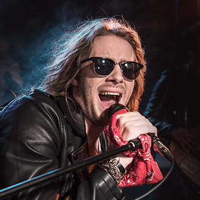
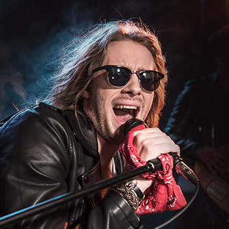

Medlemmer
The Band består fortsat af de fire oprindelige medlemmer. Vi har spillet sammen i mere end ti år og det betyder at vi kender hinanden rigtig godt. Det er en fordel både i studiet og på scenen at vi kender hinandens små finurligheder.
Alexander
Alexander er vores bassist og lidt af en practical joker. Så hvis kaffen smager salt eller mælken er blå, så er det stensikkert Alexander der har været på spil.
Yasmin
Yasmin spiller trommer på lille del af vores numre og er sanger på de andre. Yasmin har altid sunget og hendes stemme er næsten synonym med The Band.
Kristine
Kristine er gruppens guitarist. Det er også Kirstine som synger kor på de fleste af vores studieindspilninger. Kristine er også gruppens barista - hun ved bare alt om kaffe!
Johan
Johan er gruppens trommeslager. Han stjæler dog af og til mikrofonen fra Yasmin, når de allermest rockede numre kræver hans rå vokal.


 
